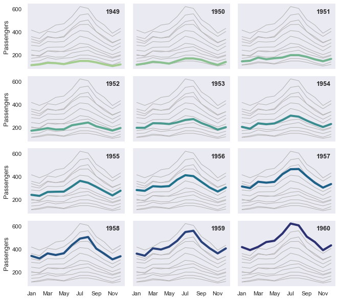

Small multiple time series¶
seaborn components used: set_theme(), load_dataset(), relplot(), lineplot()
import seaborn as sns
sns.set_theme(style="dark")
flights = sns.load_dataset("flights")
# Plot each year's time series in its own facet
g = sns.relplot(
data=flights,
x="month", y="passengers", col="year", hue="year",
kind="line", palette="crest", linewidth=4, zorder=5,
col_wrap=3, height=2, aspect=1.5, legend=False,
)
# Iterate over each subplot to customize further
for year, ax in g.axes_dict.items():
# Add the title as an annotation within the plot
ax.text(.8, .85, year, transform=ax.transAxes, fontweight="bold")
# Plot every year's time series in the background
sns.lineplot(
data=flights, x="month", y="passengers", units="year",
estimator=None, color=".7", linewidth=1, ax=ax,
)
# Reduce the frequency of the x axis ticks
ax.set_xticks(ax.get_xticks()[::2])
# Tweak the supporting aspects of the plot
g.set_titles("")
g.set_axis_labels("", "Passengers")
g.tight_layout()